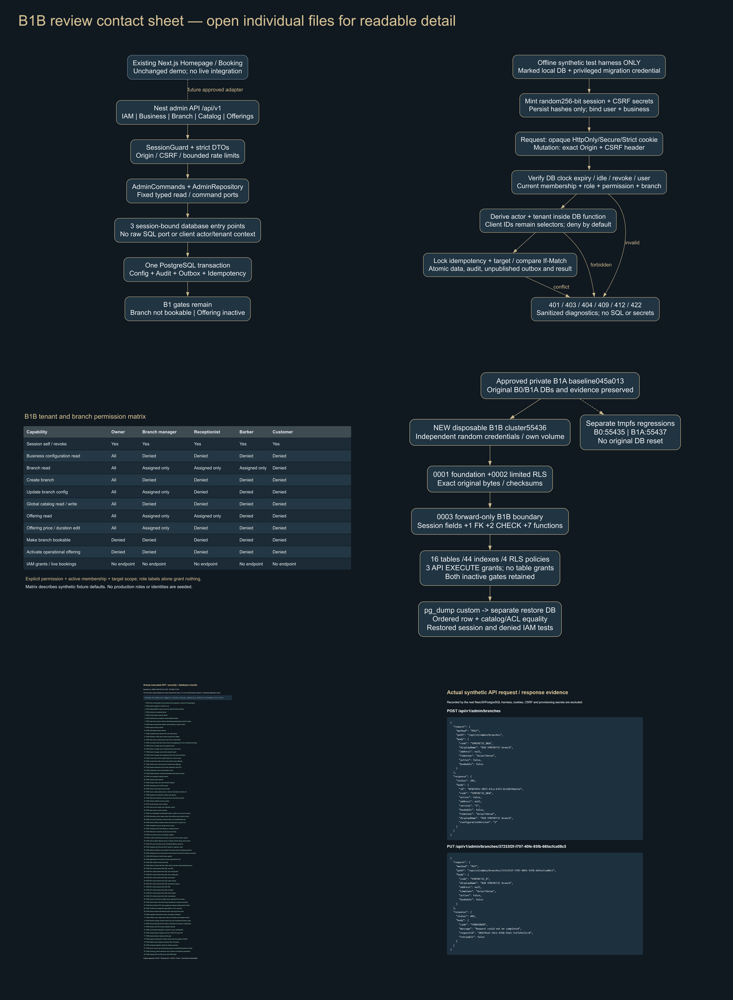
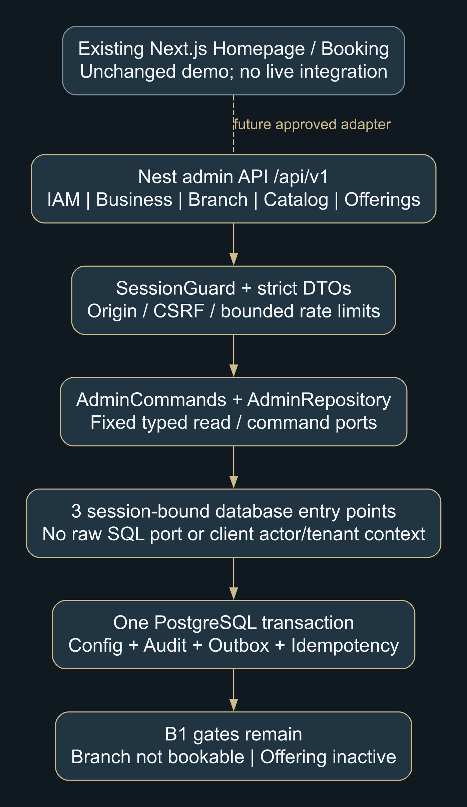
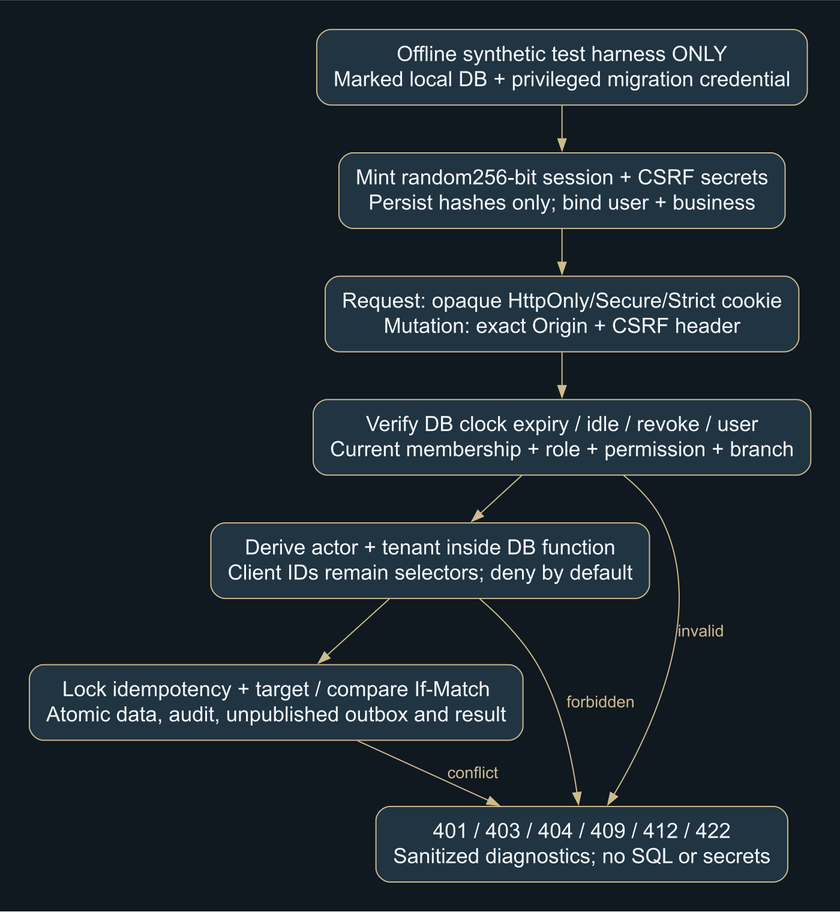
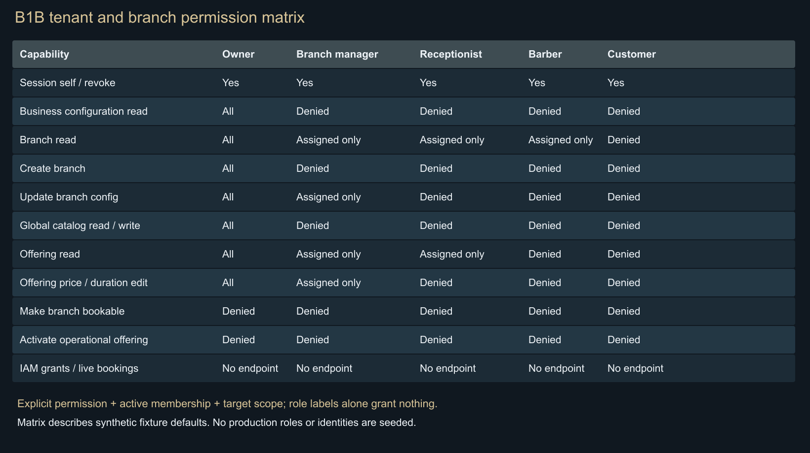
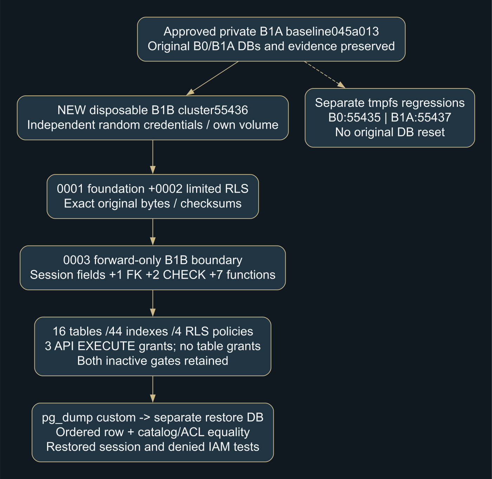
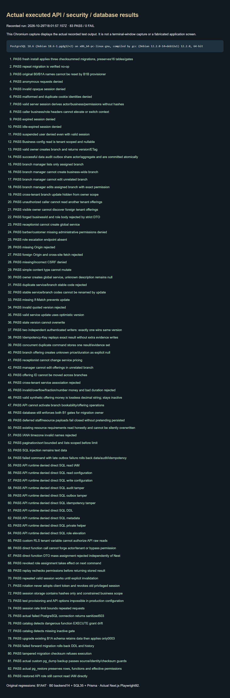
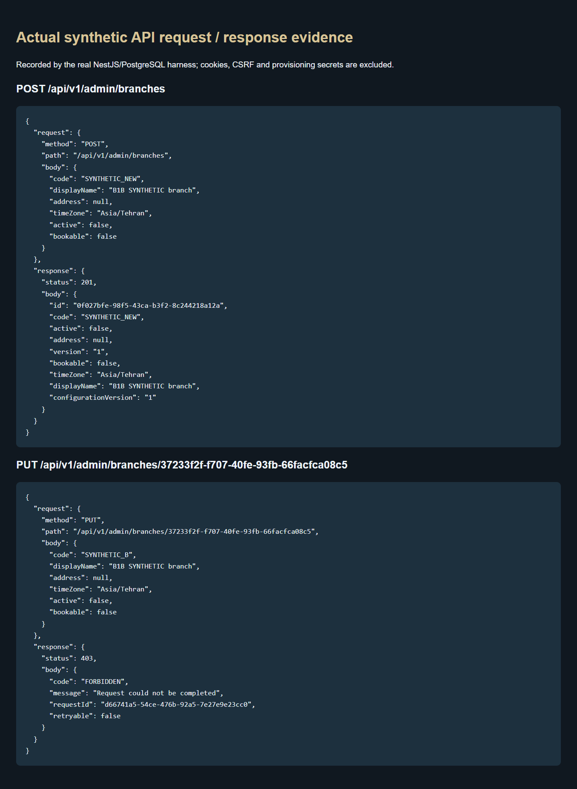

Isolated authentication, authorization and administrative APIs. No live booking, payment, notification or production deployment. Approved Homepage and Booking remain unchanged.
Actual checks: B1B83 · B1A47 · B0 backend14 + SQL35 + Prisma · Frontend92. Catalog/backup/restore verified in PostgreSQL18.6.
Approval gate: stop after B1B. Production identity/MFA/HTTPS/recovery choices remain open.







Recorded evidence captures show actual test reports and synthetic API responses rendered by Chromium; they are not terminal-window screenshots. Private client images/fonts and database dumps are excluded.